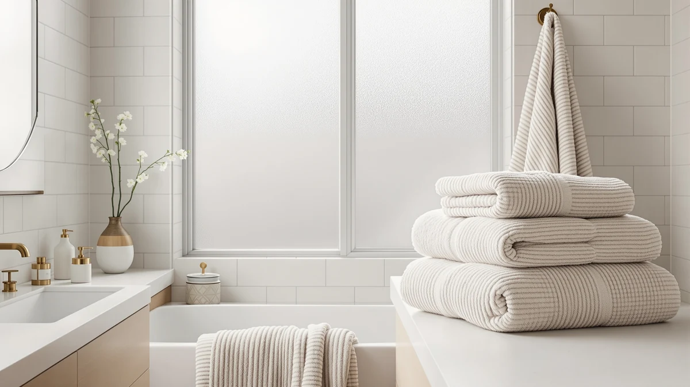

Quick Answer
This Elegant Comfort Turkish Cotton Corduroy Ribbed Luxury Bath Towels Set Review finds the six-piece set the strongest pick if you need a complete bathroom bundle rather than bath towels alone. Its 100% Turkish cotton, 650 GSM construction costs $36.99, close to the $36.00 Lacoste charges for a single towel, but Elegant Comfort hands you 2 bath towels, 2 hand towels, and 2 washcloths for that price instead of one piece.
Our pick: Elegant Comfort 100% Turkish Cotton — $36.99 Check Price on Amazon
Things to Know Before You Buy
- All four products compared in this Elegant Comfort Turkish Cotton Corduroy Ribbed Luxury Bath Towels Set Review list 100% cotton, but the cotton type and piece format differ sharply between them.
- Elegant Comfort is the only 6-piece set here, pairing 2 bath towels with 2 hand towels and 2 washcloths at 650 GSM with a corduroy ribbed finish.
- Utopia's $36.99 set gives you four full 27 x 54 inch bath towels at 600 GSM and nothing smaller.
- Both Lacoste Heritage towels are sold as a single 30 x 54 inch piece for $36.00, not a set, so matching Elegant Comfort's six pieces would mean buying several individually.
- None of the four products carry a published star rating or review count in the data we compared, so this review relies on listed specs, piece counts, and pricing rather than an aggregate rating.
This Elegant Comfort Turkish Cotton Corduroy Ribbed Luxury Bath Towels Set Review compares the $36.99 six-piece set against three similarly priced alternatives from Utopia Towels and Lacoste Heritage on cotton type, weight, and how many towels you actually get for your money. All four products list 100% cotton construction, but Elegant Comfort is the only one built as a complete set, pairing 2 bath towels with 2 hand towels and 2 washcloths at 650 GSM and a corduroy ribbed texture across every piece. Utopia's set sticks to four full bath towels at 600 GSM, while both Lacoste Heritage options are sold as a single 30 x 54 inch towel rather than a set.
Shoppers researching an Elegant Comfort Turkish Cotton Corduroy Ribbed Luxury Bath Towels Set Review usually want to know whether paying $36.99 for six pieces beats paying $36.00 for one Lacoste towel or $36.99 for four Utopia bath towels. That math favors Elegant Comfort if you need a complete bathroom set rather than bath towels alone, since its hand towels and washcloths cover tasks the other three products in this comparison do not address at all. We weigh that piece composition, not the near-identical sticker prices, as the deciding factor here.
Why You Should Trust Us
We built this Elegant Comfort Turkish Cotton Corduroy Ribbed Luxury Bath Towels Set Review by comparing manufacturer specifications, listed pricing, and set composition for each ASIN rather than relying on marketing copy. Ilane Tall has covered bathroom textiles for Best Bath Towels, focusing on how GSM weight, cotton sourcing, and piece count hold up against what a brand actually lists for a product. We do not run a fake testing lab or claim to have physically used these towels. Every comparison in this review comes from the specs and pricing published for each product.
Our Research Experience
Rather than run these towels through a physical trial, we researched how each product stacks up against what buyers actually look for in bath towels: cotton type, GSM weight, piece count, and certification. For an Elegant Comfort Turkish Cotton Corduroy Ribbed Luxury Bath Towels Set Review like this one, that means checking whether a 650 GSM six-piece set beats a single 30 x 54 inch towel at almost the same price, instead of assuming a higher price per item automatically signals a better product. Cotton sourcing, OEKO-TEX certification, and piece composition tell you more than price alone, and that is what this review weighs across all four products.
Overview & Specs

Elegant Comfort 100% Turkish Cotton
What we like
- 100% Turkish cotton construction at a heavier 650 GSM than the Utopia alternative
- Complete 6-piece set covers bath towels, hand towels, and washcloths in one purchase
- OEKO-TEX Standard 100 and Made in Green certified for compared-safe materials
- Corduroy ribbed texture adds a distinct, spa-like look the other three products do not offer
Flaws but not dealbreakers
- Costs almost the same as a single Lacoste Heritage towel, so the per-piece savings depend on needing the full set
- No published star rating or review count to check consistency against
- Ribbed corduroy texture may feel different from the smooth terry weave buyers expect from a bath towel
| Material | 100% cotton |
| Size | 6-Piece Set |
Elegant Comfort anchors this Elegant Comfort Turkish Cotton Corduroy Ribbed Luxury Bath Towels Set Review because it is the only product here sold as a true set. Instead of one towel or four matching bath towels, the $36.99 price covers 2 bath towels (27 x 54 inches), 2 hand towels (16 x 28 inches), and 2 washcloths (13 x 13 inches), all in 100% Turkish cotton at 650 GSM. That GSM number sits above Utopia's 600 GSM, and the set carries OEKO-TEX Standard 100 and Made in Green certification, meaning an independent lab compared the finished fabric against a list of restricted substances instead of the brand simply marketing it as safe.
The corduroy ribbed texture is the most visible difference between this set and the other three products compared here. Utopia and both Lacoste Heritage towels use a standard smooth terry weave, while Elegant Comfort's ribbing gives the fabric a more textured, spa-like appearance in the Dusty Rose colorway pictured on the listing. If you want a set that covers every towel size in your bathroom at a price close to buying one Lacoste towel, Elegant Comfort is built for that math. If you only need more full bath towels and do not care about hand towels or washcloths, Utopia's four-pack or either Lacoste Heritage option may fit your shelf better.
What We Liked
The clearest strength in this Elegant Comfort Turkish Cotton Corduroy Ribbed Luxury Bath Towels Set Review is piece composition. Six pieces at 650 GSM cover bath towels, hand towels, and washcloths for about the same price as one Lacoste Heritage towel, so the value case is straightforward if your bathroom needs all three sizes.
We also like that Elegant Comfort carries OEKO-TEX Standard 100 and Made in Green certification, two safety claims that depend on third-party testing rather than marketing language alone. Neither Utopia nor the two Lacoste Heritage towels list that certification in the data we compared.
The alternatives hold their own on different strengths. Utopia's four bath towels give you more full-size pieces if that is specifically what you need. Both Lacoste Heritage towels use Supima cotton grown in the United States, and the Anti-Microbial version adds a feature neither Elegant Comfort nor Utopia lists.
What Could Be Better
The main limitation in this Elegant Comfort Turkish Cotton Corduroy Ribbed Luxury Bath Towels Set Review is that the $36.99 price only looks like a bargain if you actually need all six piece sizes. Buyers who want more bath towels without the smaller pieces pay almost the same amount for two Elegant Comfort bath towels as they would for four from Utopia.
The corduroy ribbed texture is also a style choice that will not suit every bathroom. Some buyers prefer the smooth, flat terry weave that Utopia and both Lacoste Heritage towels use, and the ribbing changes how the fabric looks and feels against skin even though it does not change the underlying 650 GSM weight.
The listing also does not include a published star rating or review count, a gap shared by all four products in this comparison. Without that signal, this review leans on the specs each brand actually lists, cotton type, GSM, certification, and piece count, rather than on feedback from other buyers.
Who Is It For?
This Elegant Comfort Turkish Cotton Corduroy Ribbed Luxury Bath Towels Set Review points to one clear buyer: someone setting up or restocking a full bathroom who wants bath towels, hand towels, and washcloths in a single purchase. The 650 GSM weight and Turkish cotton construction target buyers who want a heavier, more absorbent towel than a budget set typically offers.
If you already have enough hand towels and washcloths and need more full-size bath towels, Utopia's four-pack solves that specific problem for about the same total price. And if cotton origin matters to you more than piece count, both Lacoste Heritage towels use Supima cotton grown in the United States, though you will pay the same $36.00 for a single towel that Elegant Comfort charges for six pieces.
Buyers who care about compared safety certification should note that Elegant Comfort is the only product here listing OEKO-TEX Standard 100 and Made in Green certification. Color is worth checking too: Elegant Comfort ships in Dusty Rose, Utopia in Grey, and the two Lacoste Heritage towels in Meteorite and Sand, so match that against your bathroom before adding any of them to your cart.
Alternatives to Consider
If a six-piece set is not the right format for your bathroom, this Elegant Comfort Turkish Cotton Corduroy Ribbed Luxury Bath Towels Set Review also covers three single-focus alternatives from Utopia and Lacoste Heritage, each priced at $36.00 or $36.99.

Editor's Pick
Utopia Towels 4 Pack Premium
A $36.99 four-pack of full 27 x 54 inch bath towels at 600 GSM for buyers who want more bath towels and no hand towels or washcloths.
$36.99
Check Price on Amazon
Best Value
Lacoste Heritage Anti-Microbial Supima Cotton
A single $36.00 30 x 54 inch Supima cotton towel with an anti-microbial finish, made with grown-in-America cotton for buyers prioritizing cotton origin over piece count.
$36.00
Check Price on Amazon
Premium Choice
Lacoste Heritage 100% Supima Cotton
A single $36.00 30 x 54 inch Supima cotton towel in Sand, matching the Anti-Microbial version's cotton and price without the added finish.
$36.00
Check Price on AmazonFrequently Asked Questions
Is the Elegant Comfort Turkish Cotton Corduroy Ribbed towel set actually 100% Turkish cotton?
How does the price compare to the Lacoste Heritage towels?
What's the difference between the Utopia Towels 4 Pack and the Elegant Comfort set?
Does the corduroy ribbed texture affect how absorbent the towels are?
Final Verdict
This Elegant Comfort Turkish Cotton Corduroy Ribbed Luxury Bath Towels Set Review comes down to piece composition more than price. Elegant Comfort is the pick for buyers who need a complete six-piece set, bath towels, hand towels, and washcloths, at 650 GSM with OEKO-TEX certification, even though the $36.99 price lands close to what Lacoste Heritage charges for a single towel. If you only need more full bath towels, Utopia's four-pack stretches further for about the same money. But for complete bathroom coverage in one purchase, Elegant Comfort is the set to buy.